Sitemap
Pages
Archive
Blog
- 2026-02-15 - Qute Browser Is the Best Browser
- 2026-02-10 - Setting Up My New Laptop
- 2026-01-13 - My Experience With Meditation
- 2026-01-05 - How I Use AI in Studies
- 2025-12-29 - Year in Review - 2025
- 2025-08-26 - Dream: Meeting Someone
- 2025-08-16 - Ranchi Experience
- 2025-07-25 - Achievements in College Life
- 2025-02-02 - Dream: A Beautiful Garden
- 2025-01-16 - Dream: A Movie
- 2025-01-13 - Dream: First Aeroplane Experience
- 2025-01-09 - Dream about painting a house and trying different food dishes
- 2024-06-23 - How I get Daily News
- 2023-07-01 - The Hyprland Experience
- 2023-04-11 - Dream Entry #1
- 2023-02-12 - My Fountain Pen Collection
- 2022-09-30 - Streaming on Spotify vs Using Mp3s
- 2022-08-28 - WhatsApp Has Fake Reviews on Playstore
- 2022-08-25 - Making Microblogging Website Using Hugo & Netlify
- 2022-07-24 - Setting Up My Website on Hugo
- 2022-07-22 - Website Update #1
- 2022-06-27 - Fedora Doesn't Like Me
- 2022-05-28 - Simplelogin - Best Way to Manage Your Emails
- 2022-05-17 - Using Degoogled Phone Isn't as Hard as You Might Think
- 2022-04-28 - In Search for Perfect Daily Journal App
- 2022-04-23 - Digital Journaling Is Better Than Physical Journaling
- 2022-03-30 - Why I Love Tiling Window Manager
- 2021-11-09 - My Experience With Various Password Managers
- 2021-05-21 - Nextdns Review
Books
- 2026-03-12 - Water for Elephants
- 2026-03-12 - The Shining
- 2026-03-12 - The Green Mile
- 2026-03-12 - The discovery of India
- 2026-03-12 - Sex at Dawn
- 2026-03-12 - How to solve it
- 2026-03-12 - Different Seasons
- 2026-03-12 - Der Zauberberg
- 2026-03-12 - Breaking the Cycle
- 2026-03-12 - A Little Life
- 2026-03-12 - A Brief History of Modern India
- 2026-03-12 - A billion wicked thoughts
- 2026-03-12 - 50 Years of the Indian Emergency
- 2026-02-07 - You Like It Darker
- 2026-01-15 - The Martian
- 2025-11-06 - Srikanta
- 2025-10-11 - Pachinko
- 2025-09-18 - Project Hail Mary
- 2025-09-11 - Never Let Me Go
- 2025-09-07 - Sapiens
- 2025-09-04 - The Picture of Dorian Gray
- 2025-09-04 - Rita Hayworth and Shawshank Redemption
- 2025-09-04 - Me Before You
- 2025-03-16 - 채식주의자
- 2024-10-21 - Greek Lessons
- 2024-10-13 - Anna and the French Kiss
- 2024-09-15 - India's Struggle for Independence
- 2024-02-07 - Schoolgirl
- 2024-02-07 - After Dark
- 2024-01-21 - A Tale for the Time Being
- 2023-12-31 - Sputnik Sweetheart
- 2023-07-10 - No Longer Human
- 2023-05-19 - O Alquimista
- 2023-04-16 - Colorless Tsukuru Tazaki and his years of pilgrimage
- 2023-02-27 - The Catcher in the Rye
- 2023-02-10 - The square root of summer
- 2022-12-14 - Wild Sheep Chase
- 2022-09-23 - Hear The Wind Sing
- 2022-09-20 - Kafka On The Shore
- 2022-09-15 - The Subtle Art of Not Giving a F*ck
- 2022-08-16 - Building a Second Brain
- 2022-06-22 - How to Win Friends and Influence People
- 2022-05-23 - South of the Border, West of The Sun
- 2022-04-03 - In Order to Live
- 2022-04-01 - Gone Girl
- 2022-02-25 - The Book Thief
- 2022-01-31 - Revolution 2020
- 2022-01-24 - Norwegian Wood
- 2022-01-11 - Atomic Habits
- 2021-11-14 - Call Me by Your Name
- 2021-08-12 - Normal People
- 2020-01-01 - The 3 Mistakes of My Life (English)
- 2020-01-01 - One Night @ The Call Centre
- 2020-01-01 - Five Point Someone
Gallery
- 2025-08-14 - Hills in Ranchi 2
- 2025-08-14 - Hills in Ranchi 1
- 2025-08-14 - Hill and a Chimney
- 2025-08-14 - Highway
- 2025-08-14 - Gallery Image 6
- 2025-08-14 - Black & White Hills
- 2025-08-14 - A Jungle View From Train
- 2025-08-14 - A Beautiful Plateu
- 2025-03-27 - The Red Car
- 2025-03-27 - Light Works
- 2025-03-27 - Bhutan Mandir
- 2025-03-27 - Tree and Factory
- 2025-03-27 - Truck in Bhutan
- 2025-03-27 - Saraswati at Bankura Christian College
- 2025-03-27 - Saraswati 1
- 2025-03-21 - About to Fly
- 2024-09-26 - Red Roof Bhutan
- 2024-09-26 - Nature of Bhutan 2
- 2024-09-26 - Nature of Bhutan 1
- 2024-09-26 - Buddhist Monastery Bhutan
- 2024-09-26 - Amachu Bridge Bhutan 2
- 2024-09-26 - Amachu Bridge Bhutan
- 2024-09-26 - Raining Street
- 2024-05-18 - Dragonfly Over Dried Leaves
- 2024-05-13 - Black Bird
- 2024-05-13 - 3 Birdhouse
- 2024-05-11 - Don't Underestimate Me
- 2024-04-13 - Red Whiskered bulbul Palastala
- 2023-12-18 - Yellow-wattled Lapwing
- 2023-12-18 - White Pigeon on Electric Pole
- 2023-12-18 - Spotted Dove
- 2023-12-18 - Black Drongo
- 2023-12-16 - Sunset At Plashtala
- 2023-12-16 - Rose Ringed Parakeet
- 2023-12-16 - Orange Headed Thrush
- 2023-12-16 - Gray Wagtail
- 2023-12-16 - Butterfly
- 2023-12-04 - Shikra
- 2023-12-04 - Couples Gossiping
- 2023-04-01 - 053
- 2023-02-26 - Joba Flower
- 2022-11-24 - 052
- 2022-11-24 - Sunflower
- 2022-10-07 - Starry Night
- 2022-09-14 - Moon Cloud Night Sky
- 2022-05-28 - Same Scenery Different Day
- 2022-05-28 - Yellow Flower
- 2022-05-28 - The Midday Sun
- 2022-05-28 - That One Star
- 2022-05-28 - Sunbathed Road
- 2022-05-28 - Rose 9
- 2022-05-28 - Rose 8
- 2022-05-28 - Rose 6
- 2022-05-28 - Rose 4
- 2022-05-28 - Rose 3
- 2022-05-28 - Rose 2
- 2022-05-28 - Rose 1
- 2022-05-28 - Rainy Station at Night
- 2022-05-28 - Raindrop at a Night
- 2022-05-28 - Railway Track Through Window
- 2022-05-28 - Mustard Flower
- 2022-05-28 - Leaves
- 2022-05-28 - Lamppost
- 2022-05-28 - Hiding Behind The Leaves
- 2022-05-28 - Green Leaves
- 2022-05-28 - Flowers on The Roof
- 2022-05-28 - Dark Leaves
- 2022-05-28 - Colorful Sky
- 2022-05-28 - Cloudy Coconut Tree
- 2022-05-28 - Clouds on The Mountains
- 2022-05-28 - Clouds at Golden Hour
- 2022-05-28 - Clouds
Thoughts
Perfect is the enemy of good
The dreams are back again. Meditating 🧘♂️
It works
 This is a test for the sticker support of my thoughts section.
This is a test for the sticker support of my thoughts section.
I should make a page to showcase my favourite stickers
Be more generous than necessary. No one on their deathbed has ever regretted giving too much away. There is no point to being the richest person in the cemetery. Kevin Kelly
A lot of things I have learnt from Piu Di’s wedding. Lots of things I was wrong about.
Hank Green 9 hours ago There’s a tapeworm that lives inside ocean sunfish but it can’t grow or reproduce there. Its actual destination is the gut of a shark and it only gets there if the sunfish gets eaten. This is where it wants to be but there’s a million ways to get there.
It infects little crustaceans first, then whatever eats the crustacean then whatever eats that. Sometimes it ends up in Mola, sometimes in other fish. But all of that is just a winding path toward its goal.
While it’s drifting through this series of random hosts, it’s already built the hardware for its final destination. Its head has retractable tentacles covered in hooks precisely shaped for a shark’s intestinal lining. Thats where it’s headed and sometimes it gets there when a Mola is eaten by a shark, but that certainly isn’t the only path.
Remember Nybelinia surmenicola…
Be picky about your destination, but flexible about the ride.
I need to meditate more and more. I got a dream today. My head hurts bad.
Would there be a regime change in Iran?
Its sad what’s happening to Iran. One reason why india should be self sufficient in defense
Can anyone tell me why small web and indie web is dominated by techie? Did everyone else move on??
Making a Todolist app feels like it should be easy but it’s not
Apparently some americans think instant coffee is not really “coffee”.. Well fuck you
NTPC graduate level pre math is harder than CGL pre math, or maybe I’m just tuned for SSC?
I have so many maths to do :-;
Ios design is objectively better for mobile ui and app interactions
Flutter is better for building android apps, the animation is just chefs kiss.
I want to now transform my book tracker into an app.
I’m slowing starting to understand why people prefer zsh over fish.
I have so many ideas as to what apps I am going to make. Damn
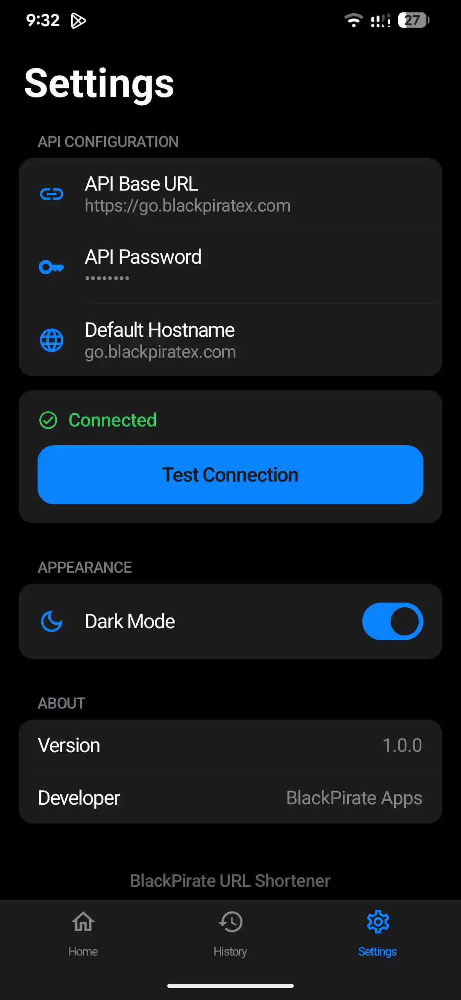
How’s this app ui?
I have not found any app that I can use to post to my website and now I have built this. I’m so impressed. I have plans for other apps that I can make. Bye bye web ui.
Is this works?

What I made today
Image not found: img/3af17d3e-6f88-4fc1-9eda-0b9ca1b77129.jpg
A test note from my app.
Gaya was good. But made me so tired.
Mind maps are much better for last moment revision
I’ll be travelling tomorrow.
Note for the future: if you want to change blur level in a terminal emu, in hyprland, change it through hyprland and not the terminal.
Im so mad at myself. Sigh
Im going to be sick probably oh my god
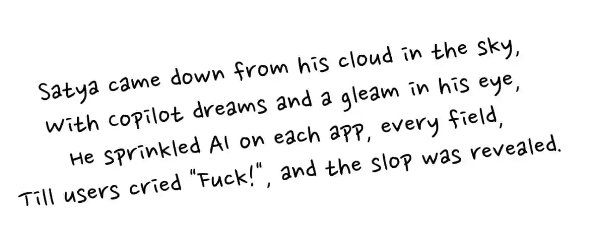
This is why you should not mess with laptop more than it needs
oh my god im so annoyed how many servers do u need to check for mirrors?
when the speedtest for getting fastest mirrors take up so much time, sigh
Linux apps names are so bad in terms of discoverability lol
I try to compile android APK for the first time and it fails. I am so pissed rn I waited like 30 minutes for this.
Onno kono cm er theke wb er cm newspaper er headline e thakbeiii😂🤣
why am i so.sleepy always
One of the best video on this topic. Description has some good books. Why Indian MEN Like Leaked MMS? https://youtu.be/Bw5tKmZ1ztU
I feel like my brains will fall out when i try to study for 4 hours continuously.
why are CMs dying in plane crash? Conspiracy?
🤣🤣
The second hand market of laptops in the city i am currently living is very bad. Only 3 options.
today is more productive than other days.
I lost one big entry of my diary im so pissed.
gemini is just better at web design
3 days of not studying, it is so hard to get back on track.
i should write a post on how to use anki for ssc students.
Finally I am able to agree my family to buy me a laptop
i feel guilty, its two days and I still havent started my journey. Man!
Exam was good but I dont think Im going to clear it. I feel sad
Being a computer nerd has paid off 😭 even if I don’t get selected I’ll be happy
Exam tomorrow, I have another thing to do.
Good post, although it is not a technical one but sets the mood. https://lmnt.me/blog/how-to-make-a-damn-website.html
Huge update to my website, I am consolidating everything. No more multiple pages. One website for everything.
I thought all I needed was pomodoro technique to increase the hours I study, but apperantly not. Studying continuously for hours at end is much better solution. All I need to do is do this for twice a day.
I should not watch other people’s travel pics. The urge is real. The jealousy is real.
I studied continuously for 4hrs 40mins. I am proud of myself. I can do it.
probably the most useless court in the world is ICJ
Trying to make an app that would help me to push updates to this website. Hope it works.
New blog post, How I use AI in my studies. https://blog.blackpiratex.com/how-i-use-ai-in-studies/
I should write more. On my blog.
Happy belated new year. I am again one day late lol
Last day of the year😶
And the opposite of love is not hate after all, it is indifference. Source
New post: Year in Review - 2025 https://blog.blackpiratex.com/year-in-review-2025
if my mind is not relaxed I am better at guessing. But if im relaxed analytical thinking is more useful.
Exam soon, nervousness started, hello anxiety
Scientific scandals are going to be my favourite sub genre in True Crime ❤️😭soooo good
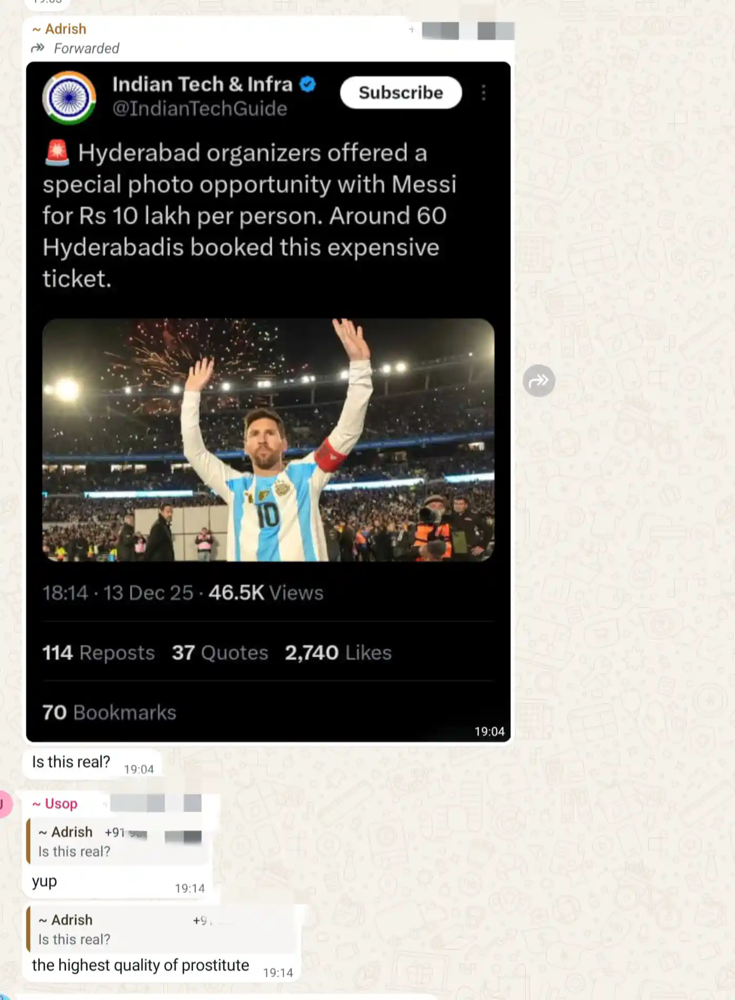
lmao
Who thought descriptive papers would be so tedious. I am writing but so many mistakes and so many to keep in mind.
I had a dream. A dream like any other. It was a happy dream.
after hours of talking with gemini and Claude in perplexity I finally have what I wanted. A fully working session recorder while writing on my diary app.
My phone is finally fixed. It’s display was broken. I have set it up now completely.
My diary app is becoming a fully featured. I need to do polishing. Maybe someday I’ll make a page that showcases its features. To the future me… Do I still use this web app? or have I quit using it.. or I don’t write diary now?
Govt wants to divert Ganga’s water to yamuna to dilute pollution. Are govt officials retarded or what
Rule 34 will have new meaning when AI becomes very good (soon)
Huge improvements to my Journal app.
- Graph page is much more prettier, new graph, word heatmap.
- New map page that shows entries by location.
- Backend changes, no more localstorage, it now stores in a local db. (No storage limits)
- images are no longer heavily compressed, just lossess compression.
- Export is now Zip, images are exported as binary
- New more page, with a sleep analysis page, fetches sleep data and displays on editor.
I hope the day goes good. Please. I am not a terrible person. I want it.
I feel melancholic now. It shouldnt happen. But here it goes.
I am so slow in maths. I have to do 50 questions in 30mins. But so far i can only do half. Sigh!
I gave a mock, its live ig? Idk when the results will come out. :-;

Almost 8 hours battery backup with 3 year old battery and 4000mah capacity. Using microg only no google play services
I couldn’t go to give the exam because it was in Birbhum like wtf bro its so farr
I got 73.9 and cut off is 74.9.. I didnt get for 1 marks. Wow. Wow
I made a Journal webapp for my personal use, it works offline, can be installed. You can use it: https://diary.sudipx.in
Generative ai (image) still sucks at human faces. 😭
Idc what others say but AI is goood
Why is the cold back again?
I swear, gemini 3.0 is sooo good. I am making apps for personal use non stop. Hehe
I completely forgot that I have to cook today, sigh. Plans for the whole day has been changed.
Today for the first time i got such high marks in mocks. Im improving.
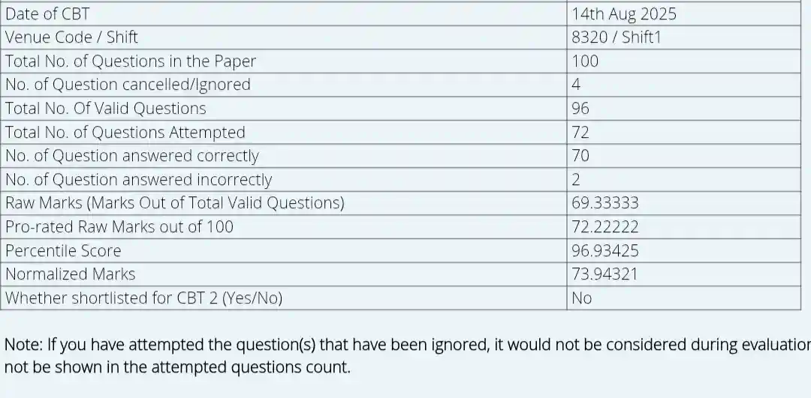
Even after getting 96th percentile im still not shortlisted for cbt 2. Thats competitive exam for you.
3 more days for the exam, the anxiety might come back
Okay so finally the web app is somewhat complete. I am happy. Next time I’ll think of adding images.
I hope this works well, posting from my new react app. hehe
New gemini 3 is soooo cool. They fixed so many problems
I want to move to databases, so it would be all in one journal. Is it good idea?
This is a new test post.
trial 8, finally db got updated.
I’ll fix it later, Lazyyy
I changed some backend to make this microblog ready for mastodon posts. works?
In maths, time is my biggest enemy
First time trying derma roller on the face, let’s see what happens.
cloudflare was down, that means my website was also down, sigh
I need to integrate mastodon comments to this microblog. 🫠
With AI tools getting so good its easier than ever to build forums using simple free technologies. I wish we lived in web 1.0 😞People would have visited my forum if i made.
Milk powder solidifies in boiling temp, my theory is that the protein is what becomes solid. I should remember this knowledge next time I make coffee
I have cold. sigh
I started reading Srikanta its a adventure novel. I really shouldn’t read adventure novel. My mid twenties blood wants rush.
I have been binge watching youtube too much lately, my attention span and boredom tolerance is fucked. I feel guilt now. I should meditate.
my dreams are now becoming less nightmare and more of a happy dreams. I hope they come true!!
I finally have a proper analytics tool for my website. Its umami. Hosted on vercel. I should write a tutorial on how to do it. Mhihi im happy. But studies took a back seat today.
Even after 3 years of studying Zoology, when you talk about penguins i think of linux.
I found a very good web browser based on gecko. It has tor integration (wow) and containers!!! (wow wow) Here is the url of the github repo. https://github.com/FaFre/WebLibre.git I should try using it for a week.
I cant sleep but i need sleep really bad rn. My nose is watering, fucking allergy (or cold maybe?)
My coding decoding skills are so bad.
I thought these are rare, but Sam said no
I have so much to study, and it feels like not enough. Where did my enthusiasm go?
Check this site, https://frills.dev/about/ I frigging love it.
I had nightmares again after a long time🙂
I miss her, i miss her so much, i should not have talked about it. Sigh
What happened to me? I am overthinking so much nowadays
I had the best day ever:) I like you
In swiggy where they used to show a bike in the map when delivering, its now showing a train. Apparently i get my food by train
Using R2 and vercel to make an gallery website feels hard. I want to sleep now.
Im just this close, like really really really close. But not sure if ill be able to clear it. Or maybe I’ll have to wait one more year and my dreams would be crushed.
Yep, I cannot sleep tonight
My sleep schedule is getting fixed, hehe!
Dreams again, and i remember it well. I feel like all the progress I have made has been undone. I just dont wanna sleep again. Sorry
The coffee I made today just now is so perfect!!
I want to make a quiz for people to tell them if I think they would be a friend of mine.. I have ideass
I need to order a few things online. Why does it feel like a chore
I need to fix my sleep, otherwise these nightmares will kill me
From my room to washroom, I have to take a small walk, (20-30meters maybe?) At night it is completely dark. I love it.
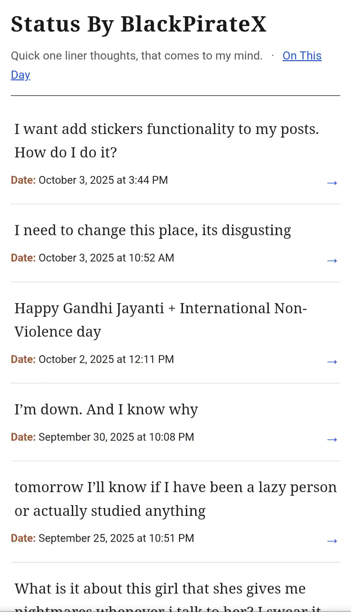
I have updated my status page theme. (AGAIN!)
I want add stickers functionality to my posts. How do I do it?
I need to change this place, its disgusting
Happy Gandhi Jayanti + International Non-Violence day
I’m down. And I know why
tomorrow I’ll know if I have been a lazy person or actually studied anything
What is it about this girl that shes gives me nightmares whenever i talk to her? I swear it was normal talk i didnt even think anything extra
Why play video games when you can make the game while playing?
Making the new website maybe exactly what That can let me abandon this specific bad habit
I want to eat whatever the fuck and sleep, im too tired
I got a feline guest today when I was eating. Too bad, I didn’t have anything to offer cuz I was finished. She/He took the fish bones and left. Hope she/he comes back again tomorrow
Coffee raw without milk or sugar allows me to skip the coffee nap, although i can still sleep
I am for whatever reason so fucking weak. My legs hurt, my hands hurt
I have never felt this slow in my life. I have no idea how to improve speed. I need food rn
I drank glucond and i think it made me energetic to do maths
My wifi was off till 12pm afternoon, i just realised how much of my study is dependent on internet.
Darker tone of lipstick looks ugly on fair skinned girls
🤣
Coffee and _ has fixed my sleep schedule.
Why does some websites go out of their way to disable paste when logging in?
Whats with girls and poetry?
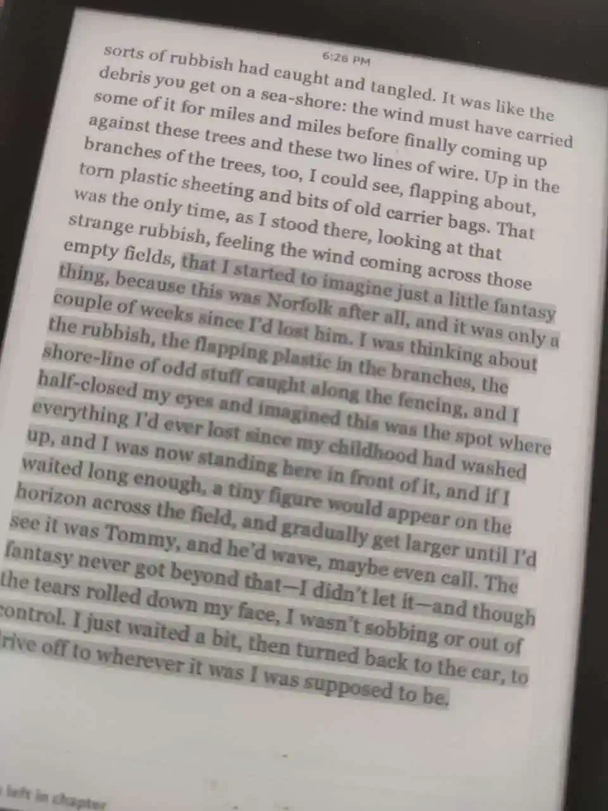
When everything from your childhood goes away one by one and all youre left with are memories to keep you company while donating your organs one by one waiting to be “completed” Book: Never Let Me Go
so Apple has copied Pixel this year
Do not think about meeting. [] You know what type of person she is. gEt cLoSe BuT dOnT gEt FeEliNgS, i’d rather not get close
Here’s few rules to follow:
- Avoid talking about sex
- Avoid talking about relationships.
- Dont get too friendly.
- Dont start the conversation.
- Dont ignore studies for texting.
- Texting is also a drug
Am i getting used? I dont know. What can i lose if i end contact? Probably nothing. Why is she back?
I want to end contact slowly and silently, no more making a scene.
Yep, i should have forgotten her for good.
hiii
Sooooooo. what’s up?

Everything should be fine
hihi
After doing little bit of maths revision My maths score improved. But gk💀 Chii
I need to be proactive than reactive
Never let me go. Good book so far.
I sometimes hate her and sometimes talk with her. Idk if i like her or not. I probably shouldn’t
I should stop. I need to study. But cant fucking hell.
My books website is kinda complete for my personal use. Its now live
Studyyyyyy! But i wanna slleep

My book tracker website now looks much better and has a public ui. Check it out.
I am making silly mistake. I do not think im in right mood to study.
Im exhausted. But still have to study.
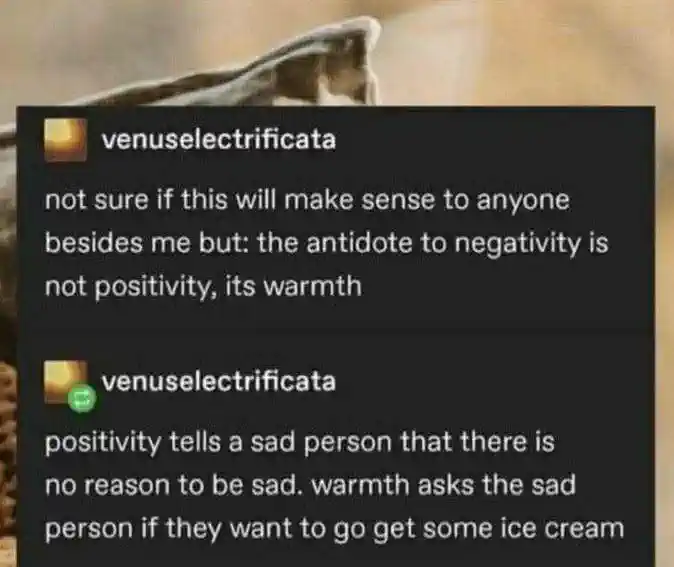
I have to remember this when i talk with someone.
My exam is veryyyy near. I should not do any coding now. Also, someone cracked my password in that book website.
I hate how you sleep while drying your clothes outside and rain comes and wets them again
I am starting to understand why database was invented. Its so much easier to work with.
I have so many plans to add to my books website. Writing it down here so i dont forget.
- Proper login a public ui and logged in ui.
- Show books that read on one day, one month and one week.
- Ability to showcase certain quotes from a book at top of the ui.
- Automatic export to a github repo.
Thanks it. Good night.
I have made my own book tracker web application, because all the other sux. Here it is: https://book-tracker-blond-iota.vercel.app/
I should have started revising before. Its taking time. Two hours and still havent finished time and work chapter. Skip more?
I have to complete one more chapter of math. I have to. There is no way I can complete revision if I don’t at least two in a day.
Studying is hard. Sigh. But i have to. I want to clear pre at least
I didnt get enough sleep, I am gonna get a headache.
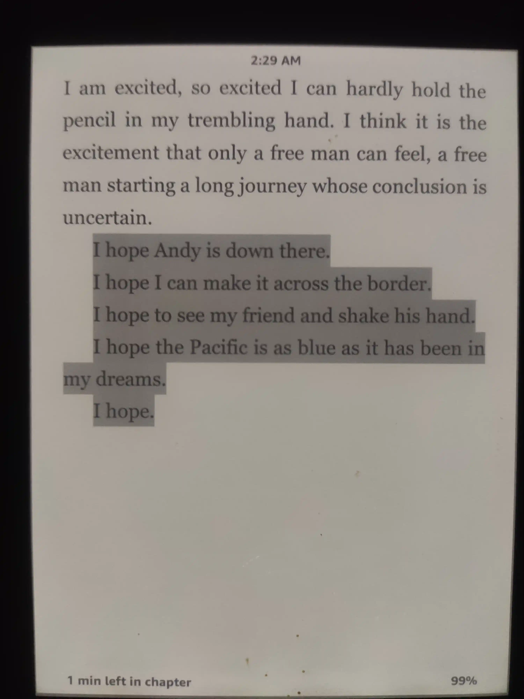
Hope ❤️
Shawshank Redemption book is just as good as the movie. I think i found my next favorite author.
Some birds are not meant to be caged, that’s all. Their feathers are too bright, their songs too sweet and wild. So you let them go, or when you open the cage to feed them they somehow fly out past you. And the part of you that knows it was wrong to imprison them in the first place rejoices, but still, the place where you live is that much more drab and empty for their departure.
For something that i cannot tell, i feel so blessed right now. Thank you. And good night.
I am so hungry rn. But food isnt ready.
Even chatgpt sucks at some reasoning which im doing, how am i supposed to do then under 30seconds?
I’m reading the book of Shawshank Redemption. My first stephen king book.
Bad wifi is so annoying
You know some birds are not meant to be caged, their feathers are just too bright.
You know some birds are not meant to be caged, their feathers are just too bright.
Im contemplating between studying or sleeping. I should not have stayed awake for so long last night.
I hate her. It feels like she talks only when she needs me. Fuck you A. I’ll ignore till tomorrow.
I think the more i post here the more i get the urge to change something. Weird me.
I literally stopped using gitjournal, this custom made website just to post to my status is cool af. Im yet to add a domain.
I have no idea how poeple post so much on their social media. I feel like a boomer.
Tags and tags page does not work rn. But yeah not gonna solve it today. Good night.

I cannot stop changing my status website theme. Sigh, here is the new one.

Google photos now has a auto frame option, uses ai to frame the picture.
No offense
Good Night. Im tired

Helooo
hii

Helooooo
I did not study much today, Firstly because I stayed up late yesterday night (something like 1am to sleep) and today also spent time making things on the web. Haha
I studied so little today. I need to do maths 🫠
After a long work. Its done. My ui is live. It is much better than posting through gitjournal. I’ll add domains and fix the timing tomorrow. Good night for now. Its late.

This should Work. The timing is off. I am going to sleep.

This is 2nd test to check if everything is working. This include an image.
This is a test message that I’m posting from my website. This is edited, should work perfectly.
You should see unity between oposition and ruling party when it comes to Indian Foreign Policy. I love my country!
This website is cool af. Check it out
Finished Me Before You by Jojo Moyes. Good love story.
I hate ny memory
One of the best reads: Relativity of Wrong
I have updated my blog ui. It now looks like NCERT book. I have attached the images below.
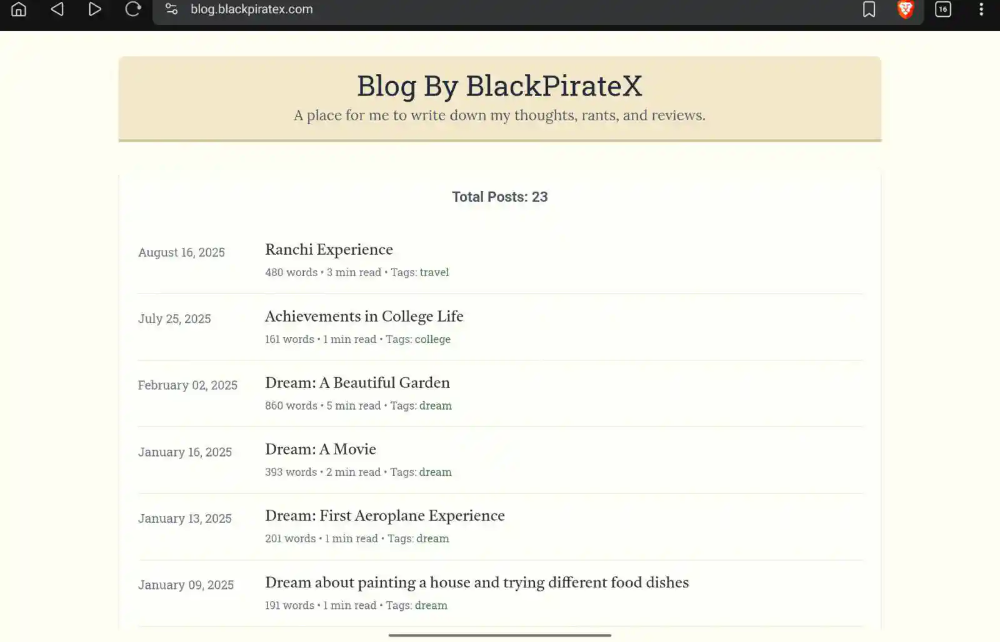
Issues regarding my website to mastodon posts is now fixed. It should all look normal in mastodon.
I made grilled chicken legs, for the first time.
You can check my website analytics here. I have self made, this using AI, vercel functions and Turso db.
You can check my website analytics here. I have self made, this using AI, vercel functions and Turso db.
My performance tanked because i did not give mock for a long time. I need to study maths. And give mock everyday
Literal webring: https://tilde.club/~notjosh/
Indie website’s webmasters, please add some kind of contact info. I come across so many great sites and want to contact them, but alas!
This should fix all errors. Hello from the website.
My website is now fully integrated with Mastodon. Any new post on this website will be posted automatically to my mastodon account. Currently plain text, no hyperlinks or images. To the people who’s seeing it on mastodon and not on my website, well Hi, nice to meet you.
I have made a website for shortening url. Heres what looks like  .
Check one url from it: https://go.blackpiratex.com/scsb6C4
Password: password
.
Check one url from it: https://go.blackpiratex.com/scsb6C4
Password: password
I have made a url shortner site for my personal use. It uses vercel functions and turso db. Here is what it looks like.
Use this to publish obsidian notes. https://quartz.jzhao.xyz/
If you think of ai as a tool, it is good. I am having such a blast making tools using ai. It reminds me of tom scotts a video about api.
I am making a social media webisite. Right now It is very basic. Here is a screenshot. It also has live chat feature using Ably.


Brings back circa 2020 memories. ❤️

My blog Now has proper comments. Hehe. It uses database and fully functional without js.
My gallery website finally has a functional like button. I am awake till now because of that. Addiction baby!
Wplace.live
It’s a live map of thr world where everyone can draw with pixels and create art
Same like reddit R/place
Credit: Debarun
My gallery website has been revamped.
I want to revamp my gallery website but its taking too much time.
New Blog post: Ranchi Experience.
I went to Ranchi few days ago, here is some key insights.
Has a video inside it. https://blog.blackpiratex.com/ranchi-experience/
I slept through whole day yesterday. Sill my body hurts
Happy Independence Day!
Last year I spent start of the Independence day by finishing India’s struggle for independence. This year I’m traveling on train.
Exan went good. First time visiting a new state
Im at (redacted) right now.
There is update on websites. The music.blackpiratex.com has been revamped. I have made a web app using gemini. https://last-fm-app.netlify.app/ If i get bored ill make again.


Dreams :(
Does not matter what happens you should always be in the right path. But does that gurantee happiness? Our mind is source of all sadness and all the hapiness. My desire to suffer less may be the cause of the sufferings.
Living is hard, dying is easy. But what does life give that death doesnt? Everytime when i fear suffering I turn back to buddhism, thousands of years ago people had the same problem like we have now. What did technology achieve then?
Im going to meet my girl on her birthday!! I dont care whatever happens.
I just finished Sapta.Sagaradaache.Ello.Side.A. Holy shit its good. I am even more convinced that happiness lies somwhere other than money. No I do not think its love, but something else. I hope i dont get dreams tonight.
CGL postponed to Sep first week. I should do maths and reasoning in these days. 200 reasoning each chapter.
Make a cool facts about me widget on my main website (use embed? and status website together?)
Google have rolled out end to end encrypted location history timeline, I guess i should use it.
If anyone knows any way to record location history like that on google maps please tell me.
I know one way to fall asleep faster. But its controversial.
I sometimes regret coming home. Sigh

I got scared of my own reflection
Website to do:
- Make embed page for status site.
- Make an embed page for my music site and integrate to main site.
Good night:) this status website is now fully integrated into my main homepage. Sweet dreams.
https://einthusan.tv/intro/ South Indian Movie site.
Judiciary is probably most corrupt organ of the government.
I have no idea how people do 5-6 hours of class at one sitting. Sigh
Firefox finally fixed their tab ui, it is so much better now.

I need an app that can track my location like google location history but it would be private
Twos is a good app but so laggy. Sigh. It has potential. Idk if ill be using it or nah.
Im looking for a task app that ill actually use.
I didnt study whole day.
- Watched some videos that gave me nightmare. (And yeaterday i told someone that my nightmares are over.)
- Tried to install microg but failed.
- Onlyoffice documents is really good. Can replace google sheets.
- Tried to password protect website using cloudflare zero trust but again failed.
Im so fraustated rn.
Hurrah! My website now has a guestbook. Please sign it here, https://guestbook.blackpiratex.com
First night at Midnapore, so far so good.
First night at Midnapore, so far so good.
Trying to make an app that would help me to push updates to this website. Hope it works.
Damn, I have posted so little last year.
Damn, I have posted so little last year.
Instead of making my website pretty, i should focus on buiding more features.
Ideas that i may wanna implement.
- Timeline or Calendar View: - Generate a calendar heatmap showing volume of posts per day/month (e.g. GitHub‑style activity grid) or a vertical timeline view for easier browsing.
- Search or Filterable UI:- Install client-side search (like Algolia/Tipue or simple Lunr.js) to allow users to search within statuses or filter by keywords, tags, or date.
- Author & Metadata Display:- Although it’s your personal feed, optionally display additional metadata: device used, approximate mood (e.g. emoji), location (if relevant), or a sortable “reaction” metric.
- Random Thought" Generator:- Add a button: “Give me a random thought” It loads a random status using Hugo’s .Shuffle or JavaScript.
- “Printed Mode”:- Add a /print version of your feed: Clean, typographic-only version Could be printed and saved as an annual “status diary”. Bonus points for cover page + yearly summaries
- A goals tracker. Make a workflow to upload study times to website.
- mood tracker?
- audio and video support?
The yearly archive does not work. It would be added once i get time some other day.
Website looks like this now;)

Did some minor improvements that ought to speed up the website. Lowered the image quality, haha
Goodbye Bankura.

Im so weak at reasoning. Taking me more than 3 mins to complete one.
Im having the dreams again. My teacher is a communist and somehow leaked to a stranger that he is communist. There was a trick to calculate distance of something by using a very small amount of sand. You have to use an arrow and throw it so it touches only the top of the sand. I was begging the guy not tp harm my teacher. I have no idea if he was on side of us or against us.
Im cooking chicken and using a lot of lemon juice to marinate, lets see if I can get texture like resturants.
Its so late, somehow fixed. I should sleep now. Gd night.
Website now has on this day page. It should refresh everyday.
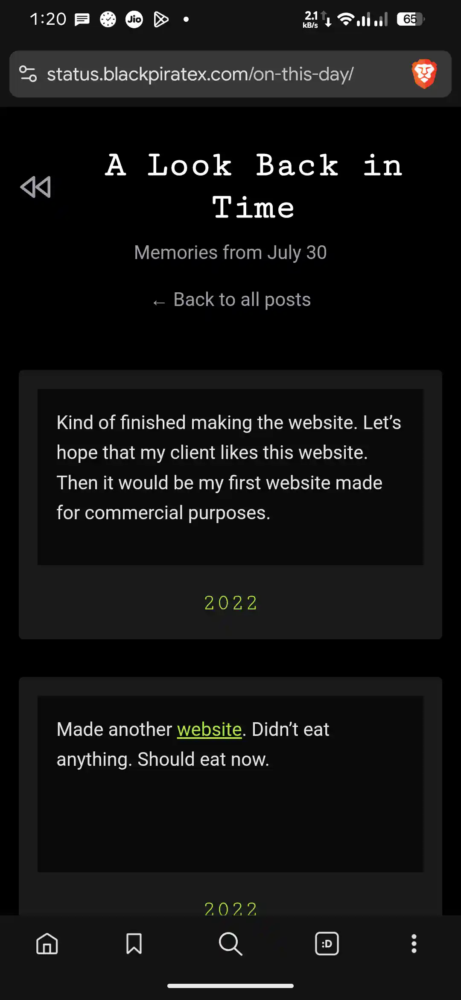
Website now has on this day button. Happy exploring.
Website now looks like this. All thanks to Gemini.

What if, What if I make a ai chatbot that is trained on ai and can reply on behalf of me in whatsapp.
I have two things that i need to sort out to finish GK-GS, Current affairs and Static GK
Geoguesser is fun.
Uploaded some of my previous dream entries. Check it out: https://blog.blackpiratex.com/tags/dream/
New blog post: Acievements in College Life https://blog.blackpiratex.com/achievements-in-college-life/
I want to have a button that opens a popup to comment on my posts. Idk how to do it tho. ¯_(ツ)_/¯
Website now uses Glassmorphic design, hehe. Use desktop for best experience. Give me feedback as where to improve.
I finally figured out how to get the texture while cooking chicken.
What is SSC doing? Eduquity is worse than TCS
Good nigjt. Im so tired
Vote fast. https://strawpoll.com/embed/kjn1DmaJ2yQ
The linux and FOSS community has lot of bengalis. (Im one)
Absensce of evidence is not evidence of absence.
New addition

I think nightmares and bad dreams have become part of me. Today I dreamt about ice age and Dinosaurs.
I earned 100rs today for my comp knowledge.
Check a computer if it’s working in girls’ hostel then bring it to our department and set it up.
Two more exams and 6 more days. College will be over. Bankura will be over. This is first time im going with the same people i came with
Added gallery functionality to this website. Im so sleepy bye
Some Beautiful shots from Maborosi


History never repeats exactly as it happened. But it does echo.
Maborosi

Japanese movies know how to capture sadness
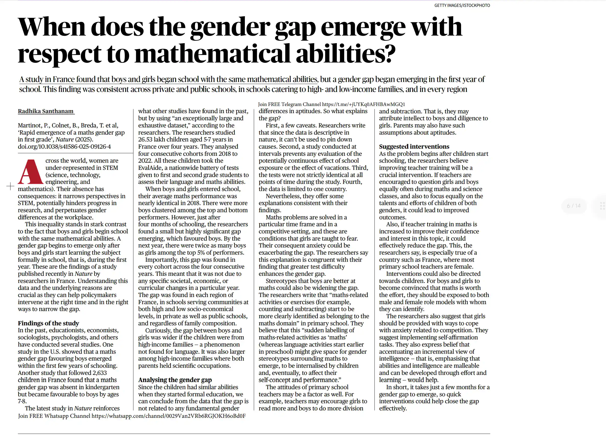
China right now looks lot like WW1 era of USA and USA right now looks like WW1-2 era of United Kingdom
Meditation does work!! I had a bad dream because i didnt meditate. Other than that the nightmare situation improved.
One by one I have lost my friends. I have one aim now only one fucking aim
Triangle is heart and soul of Geometry
Im slow at math. I should practice practice practice
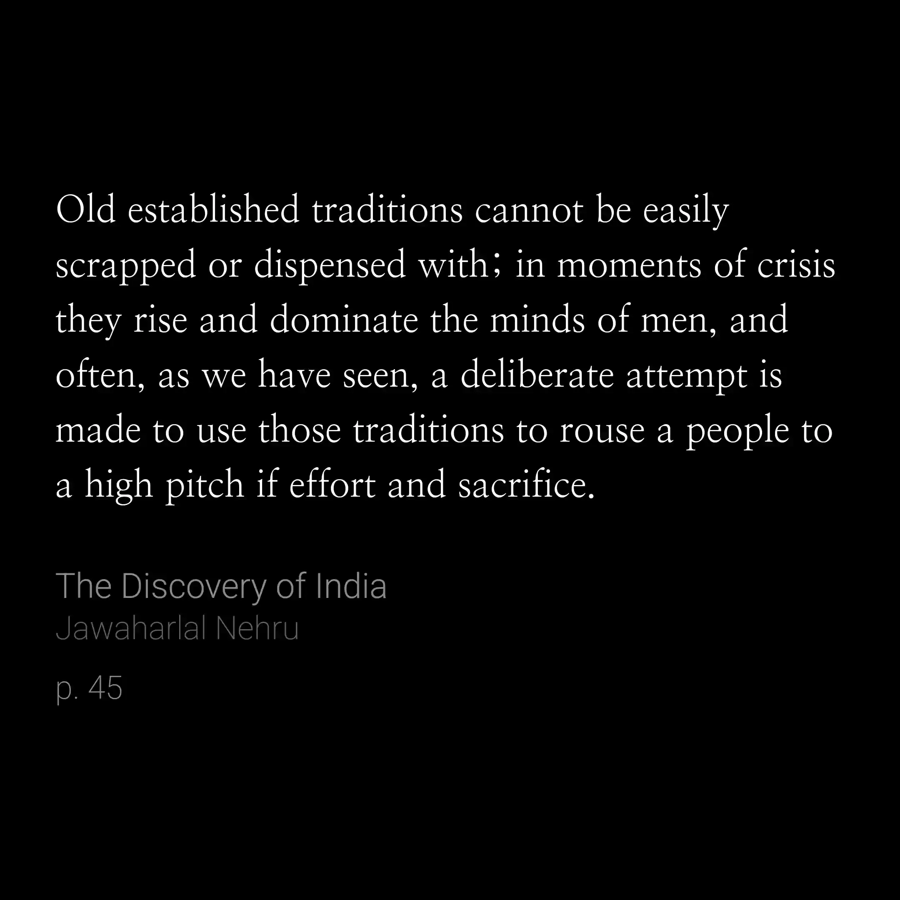
The path to spiritualism goes through materialism
If you like slow paced thriller

“You know what I think?" she says. “That people’s memories are maybe the fuel they burn to stay alive. Whether those memories have any actual importance or not, it doesn’t matter as far as the maintenance of life is concerned. They’re all just fuel. Advertising fillers in the newspaper, philosophy books, dirty pictures in a magazine, a bundle of ten-thousand-yen bills: when you feed ’em to the fire, they’re all just paper. The fire isn’t thinking ‘Oh, this is Kant,’ or ‘Oh, this is the Yomiuri evening edition,’ or ‘Nice tits,’ while it burns. To the fire, they’re nothing but scraps of paper. It’s the exact same thing. Important memories, not-so-important memories, totally useless memories: there’s no distinction–they’re all just fuel.” ― Haruki Murakami, After Dark
I don’t wanna share with anyone else, so here I’m posting it. I’ve to be consistent now. Thank you Gods
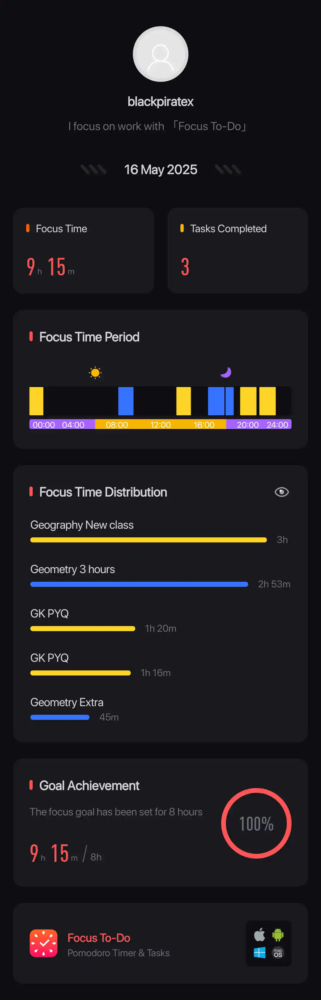
I am feeling so fucking bored. Don’t know what to do.
I studied for 5 hours today. 7 maths class and 1 GS. 10hrs of maths class in 3 hours. But it’s probably not enough.
Eighty years ago on this day WWII officially ended.
“So I have felt about this book also. It is mine and not wholly mine, as I am constituted today; it represents rather some past self of mine which has already joined that long succession of other selves that existed for a while and faded away, leaving only a memory behind. "
- Preface, The Discovery of India, Jawaharlal Nehru
I have persistent headache from the last sleep, where I had a nightmare
I have to stay here for two more days and I’m bored to death ¯_(ツ)_/¯
The heat is unbearable
I’m reading a story where its a love story between a girl who was gangraped and a guy who’s paralyzed from the neck below🙂
“Those who cannot remember the past are condemned to repeat it.” But equally dangerous are those who remember the past only to relive it, seeking justice through reversal, not reconciliation. The greatest service we can do to history is not to rewrite it, but to learn from it — with humility, not hubris.

Ghiblitrend


I dont feel like eating but I should
🙂
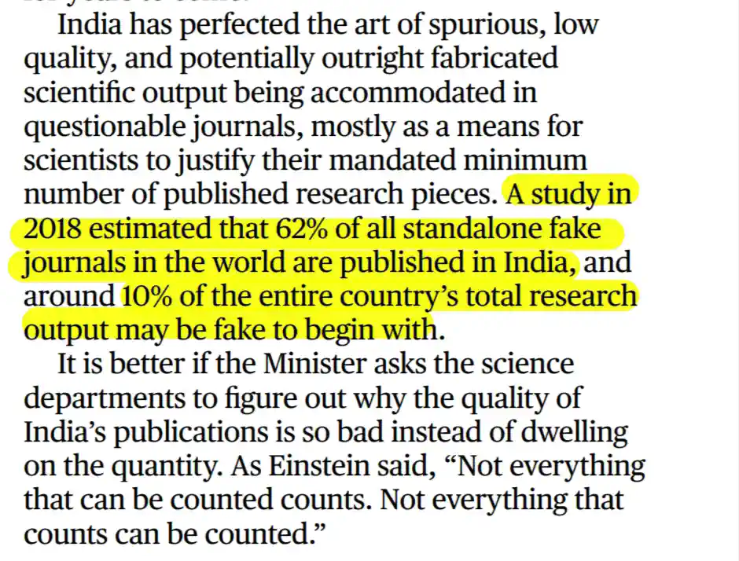
Hugo version of this website has been updated. Now runs on 0.145.0
English mock analysis:
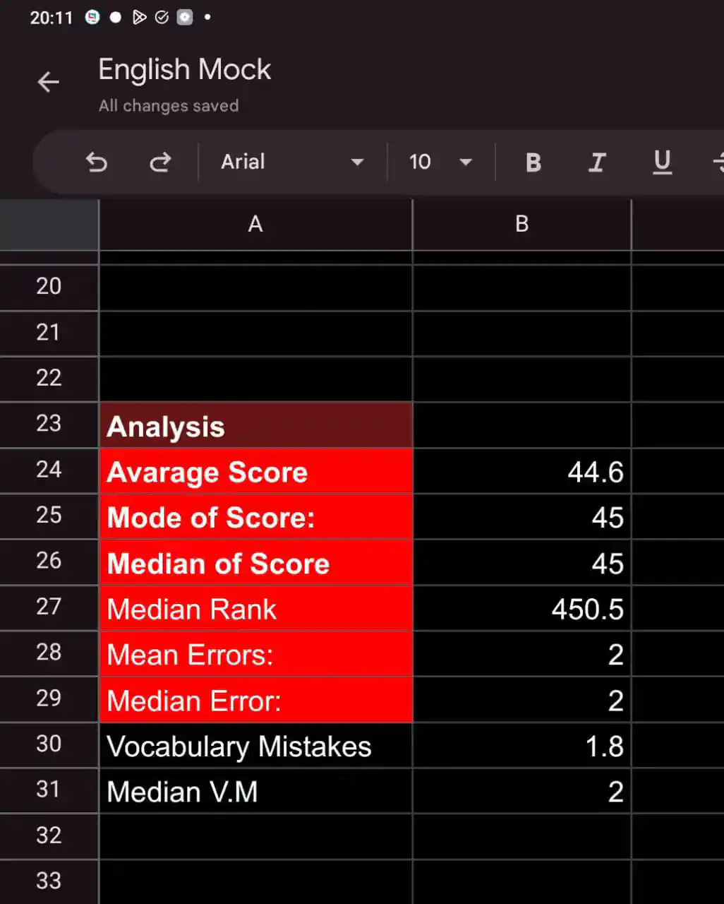
Frothed coffee tastes much better than unfrothed one
My website is failing again. I’m too lazy to fix
E-ink + smartwatch - > I wanna see that. Good luck Pebble.
As US leaves international organizations China can step up and exert its influence
5th sem is over. One more sem! Few more months!
Today’s mid day feeling sleepy
A common criticism of Indian Constitution is that it is made by lawyers, so its “Paradise for lawyers” but isn’t it good thing? Lawyers knows about loopholes in the Constitution which they can correctly remove and make it such that those loopholes cannot be misused easily
My SGPA throughout 4 semesters
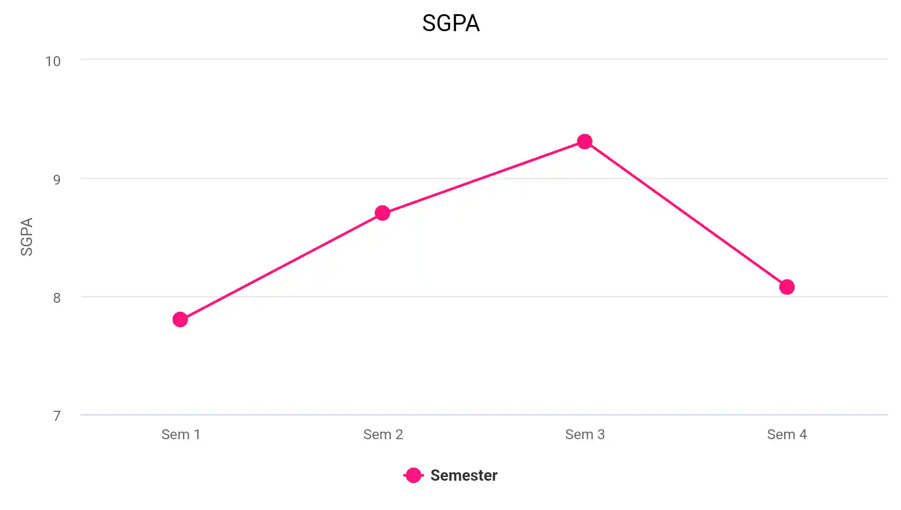
I installed Diarium today, probably gonna use it.
There’s so many types of monogamy. Humans are serial monogamist. i.e. they are monogamous at a particular time, but would change partner after 2-3 years (in general, through all cultures). Which is roughly the same time between two childs.
[1/8, 4:53 PM] BlackPirate: Ajke bujhte Parlam keno coffee khele I dream so much [1/8, 4:54 PM] BlackPirate: It inhibits acetylcholineesterase [1/8, 4:54 PM] BlackPirate: So basically I have high concentration of ACH [1/8, 4:55 PM] BlackPirate: which means my dreams are more lucid
Hello internet!
Happy belated new year:)
“The arc of the moral universe is long, but it bends toward justice.”
Pressure is a privilege
If we can synthesis DNA at our own will, we would be able to use it to store data. And the benifit would be that it would self replicate. Kinda cool.
After approx 10 days of being sick, I’m now normal. Still feeling bit weak tho
If you tell me to remember something for 1 month, my retention rate is 81.8%
If I remember something for more than 2-3 months I’m 87.1% more likely to remember it correctly
Overall it’s 82.5%
I made a website to list my study notes. It’s at its infancy. Check here https://english.sn.blackpiratex.com/ The SSL cert should be working few mins later.
Another nightmare. I thought I wouldn’t get so didn’t listen songs while sleeping, but here I’m
Another nightmare. I thought I wouldn’t get so didn’t listen songs while sleeping, but here I’m
College is over for 5th sem. I’ll only go when external. It’s sad that my college life is almost over. :)
100k 🎉

Goodbye Puja Holidays. College starts from tomorrow.
I was depressed so I revamed the home website. Bookmarks now has more links.
Another terrible nightmare. My head hurts
Today I learned: URLs have a median lifespan of about 1 year.
Cohost is shutting down. Goodbye. You’ll be staying as a entry on my password manager.
I’m proud of myself.
I broke my glasses. Went from 🤓 to 😕
Today I studied for almost 4 hours. 3 hours with tracking and one hour, without. Was teaching mom 10th maths.

Today I studied for almost 4 hours. 3 hours with tracking and one hour, without. Was teaching mom 10th maths.
Today, Finished reading Greek Lessons by Han Kang. She got Nobel this year (That’s why I tried it). And yes it was really really good. I probably found one of my favorite authors. There’s something about eastern authors… hmm
This should fix the problem. Let’s see. Edit: Its fixed. Ye hee
Vercel just changed something and now I can’t automatically update my website just by pushing commits through gitjournal app. <MAINTAINNACE TIME!!> boo
I’m slowly but surely getting addicted to Instagram. :(
Hello, as it seems that I forgot to post here.
I’m feeling so low at this hour :)
I’m finally being confident at my looks
Seeing some girl’s makeup I literally wanna be gay instead
Hey. Good night.
The more I practice English, the more I have to believe in myself.
All about lily chou chou is a sad sad movie. But good one.
There’s a website called https://cactus.chat/ that lets you add comments to your blog, and is done through matrix protocol. I would add it someday but each post would have a different page for comments, since it can’t be done without javascript. I’d like to keep my reading experience as simple as possible.
New blog post: https://blog.blackpiratex.com/how-i-get-daily-news/
“It is true that any criticism or demand no matter how innocuous it’s appearance but which cannot be accommodated by a system is in the long run subversive of the system”
Source: India’s Struggle for Independence, Bipan Chandra
Our freedom fighters not only gave us freedom but they also gave us a nation.
I want to try listening to audiobook when reading. Maybe it would improve my speed?
It’s raining and I’m stuck outside. Don’t have umbrella to return back.
Sometimes it becomes so clear as how lonely you’re
Gave my Kindle new dress!
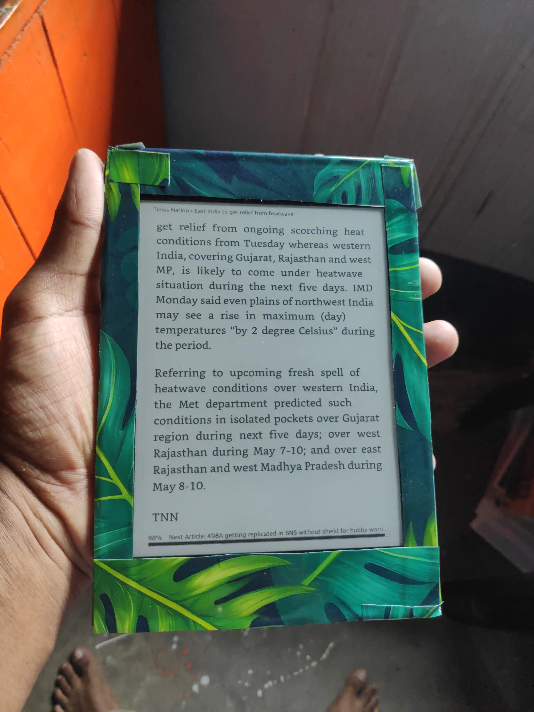

I’m really liking e/ os
I’m slowly but surely becoming a believer.
I realized something and it’s making me really sad and depressed
Niagra launcher has updated a lot!! I am going to use it for few days and see if I actually like the new updates.
Added:
- Chatbox for visitors
- Featured gallery section on front page.
- Favourite blogs in bookmarks section
Minor fixes also.
If you mix coffee decoction with powder milk and tiny bit of sugar It tastes like necter The taste is dense
First exam down. 4 more to go…
“Prison try to get me all my life, it ain’t got me yet. And when it finally does, it won’t be because of you. No offense”
Source: Once upon a time in Hollywood
Bought a Casio wristwatch.
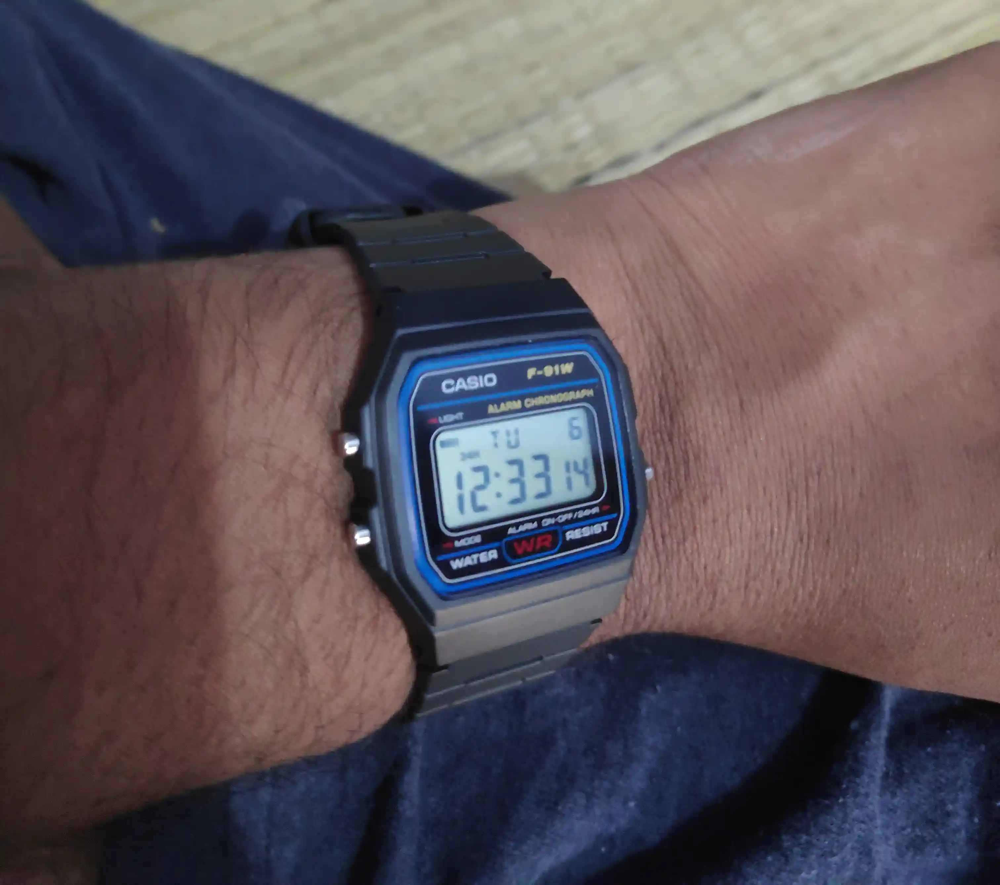
I wrote my thoughts in diary and it feels better.
In order to co-operate we must believe in some shared myth, may it be God, a nation or anything else. So yes religion does have a place.
Added 4 more books in notes website. Total books 16. The hugo version of notes website has been upgraded to version 0.121.2. latest features are used. The book page now has book cover, background has a oval shape which matches the cover image color. Book title background also matches the book cover color. Good night.
This made my day!
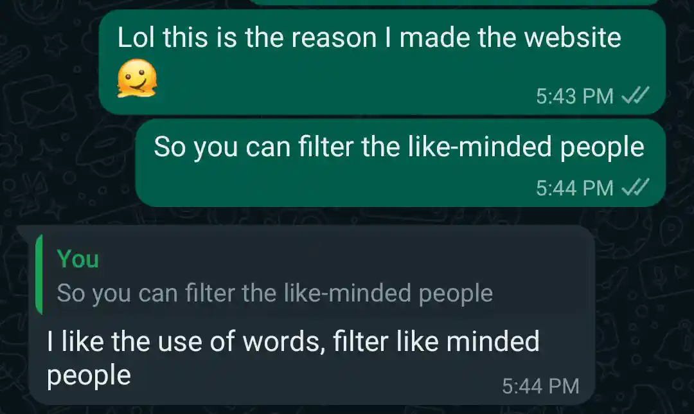
Yesterday I met a guy who wanted to meet me in person, because he liked my website. That made my day lol.
Hey, I’m back. I forgot the GitHub account 2 step verification. Yes that’s my excuse.
Today was a shit day. Hope it gets better.
Finally figured out how to install genuine Photoshop (not modded) without paying. hehe

All or none law for action potential is a lot like 1 and 0 in computers.
Yesterday was a shit day. Hopefully today is better.
Changed custom rom after so many months. I am trying to fix the battery issue. I think it was the kernel. Let’s see.
In future people will do treasure hunt for password.
I hate festivals, they suck
It’s lonely and sad
Wrote this big fat command to download youtube video
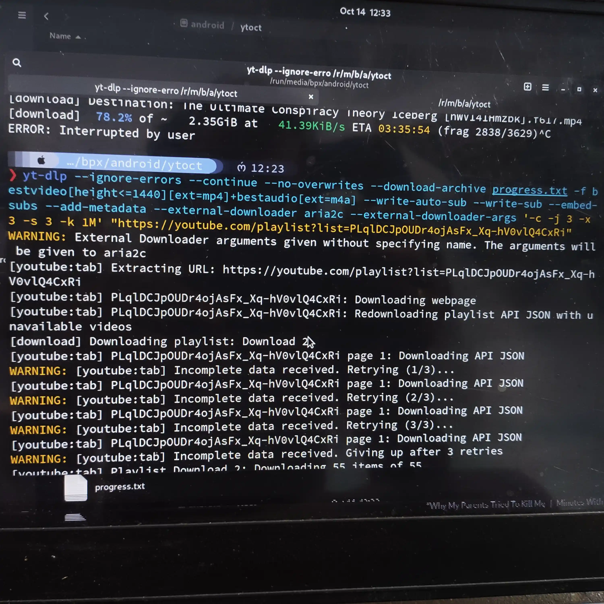
I’m craving coffee, but promised mom, not until Durga Puja
This much I wrote from Feb to till now. Not much, but definitely proud of it.
Pressure of studies as soon as I recovered is making me lose all my free time. Sigh
When someone acknowledges their shortcomings, being honest, it’s just so sweet
Hey. So long. Life update: Sick for so long. Viral fever, doc said.
Drank coffee after almost two months. Forgot how much I loved it.
Syncthing is one of the best syncing app. Just love it.
Getting paywalled when trying to read a blog is annoying af. At least give a heads up.
Happy Independence day! 🇮🇳
My result got out. Im 4th in college. Not bad I guess.

Getting rich in Minecraft. Need to get in irl😌
I don’t think Google’s new encrypted chat standard will get adopted, Unless there’s govt regulation. The network effect is the only thing that makes a chat app good or bad. You don’t open a chat app just because. You open to talk with your friends.
“The new atheists share with the religious fundamentalists the belief that their way of seeing the world is the only way there is. Now science is a valid way of seeing the universe, religion is a valid way of seeing the universe and they have the difference between prose and poetry. So anyone who thinks only prose exists or we only need poetry is a fundamentalist because they fail to understand the many ways in which we have to interpret the universe in order to live a meaningful life.”
Source: Found this on my notepad
Iron golems proposing to villager is cutest thing ever.
I fucking got mending book in Minecraft. And a villager who’ll sell lots of mending books.
Damn I missed the birthday of this website. 26th July. Happy late birthday. Completed one fucking year, hard to believe.
I tamed a cat in Minecraft. 🐈. Meow. Need one more to start breeding.
I did so many things in minecraft today. Made an automatic skeleton farm with spawner. Got bone meal from that and growing potatoes. I’ll never be hungry ever again.
Learning how to give good prompt in AI chatbot is basically learning how to talk to AI
This website is reaching one year of it’s age. Damn. This is the only website who’s theme I didn’t change. Although I might ;)
“To wait. In our lives, we know joy, anger, sorrow, and a hundred other emotions, but these emotions all together occupy a bare one percent of our time. The remaining ninety-nine percent is just living in waiting. I wait in momentary expectation, feeling as though my breasts are being crushed, for the sound in the corridor of the footsteps of happiness. Empty. Oh, life is too painful, the reality that confirms the universal belief that it is best not to be born.”
Source: The Setting Sun, Osamu Dazai
I definitely should make a Hugo theme based on my status website and publish it. It’s too good to keep it all for myself.
I need one fucking more diamond to make an enchanting table 🙂
I was so addicted to Minecraft last night that literally dreamt of drinking water from minecraft fountain
I’m now reading the author’s biography and it’s making me more sad than the book did.
Finished the book “No longer Human”, didn’t make me cry but it’s depressing to say the least.
Only two things you need nowadays.

I want to revamp my webring, so it doesn’t use any Js.
New blog post: The Hyprland Experience. Also blog website got a redesign.
It’s weird to see grown-ups talk about their imaginary friend.
Launched my own webring. Name Indian Webring. Join if you match the criteria.
Use boroline for pimples. Pimples would go away in 2 days
I’m addicted to Dead Cells , it’s frigging good. The game is hard but definitely addictive. Also there’s new content and new way to kill enemies.
Imagine dying after 1h of playing only because you forgot to restore health :-;
I should release my gallery and status website as a Hugo theme. Others should get a help. :)
Humans like rituals, idk why but they do

I slept only 3-4h today.
Someone made my mood exceptionally good yesterday and I still remembering it. hehe
I’m feeling better after few days of feeling low.
Sex in termites is more interesting than I thought.
If you want to have a privacy friendly email, but don’t want to pay, protonmail is definitely your best bet. I probably would write a blog about it.
I should make a guestbook for my website. Maybe make it look like my status website. Or what if I use a txt file for the guestbook. I think using a txt file is better and more minimal.
I need patience, a lot of patience.
I have two exams on Sunday and Monday. Dang
Honestly I’m preferring libretube (Android app for piped, YouTube frontend) over native YouTube app. No ads, no tracking, no algorithm bullshit.
Revamped my whole gallery website. Can’t figure out how to remove the extra margin on mobile.
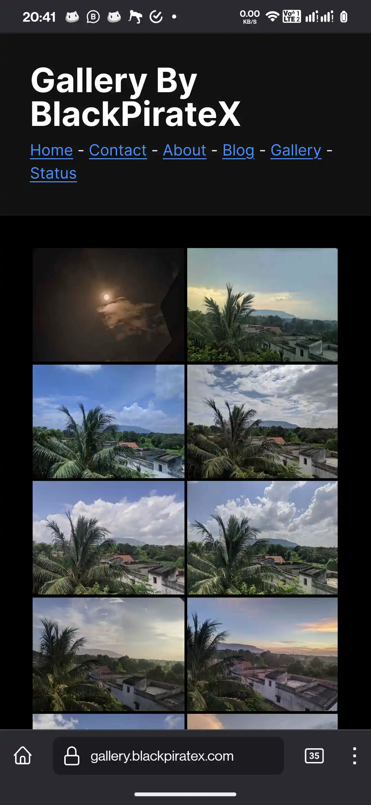
I’m getting so pro, used a JavaScript library to make my gallery look sexy
I definitely need to a page for each picture in my gallery.
What about making my gallery so and so that it makes a scrollable feed of all images. And if the someone clicks on them then it would show info about it. Like date of capture, which album it belongs to, place of capture etc.
One of the best inks I have used. Definitely value for money. Should have bought it earlier.
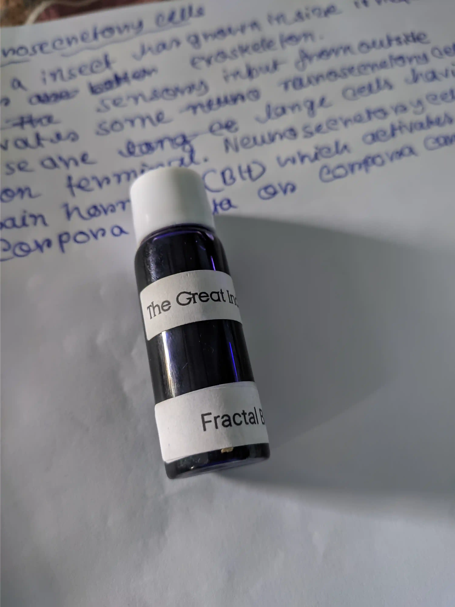
The Alchemist is cringe. But some lines are actually very goood.
Vasuce’s mindfield series is super interesting
“If something is important enough, a little mistake isn’t going to ruin it all, or make it vanish.”
Source: Colorless Tsukuru Tazaki and His Years of Pillgrimage, c17
In future I want to digitize old entries of my journal and publish them online on my website. I don’t wanna do that just yet, because of privacy reasons, and not sure if im comfortable with sharing those entries.
I want to move away from Spotify So bad. But I don’t know how I’m going to achieve that.
One key thing that’s missing from my websites is search function. Gotta find a way to do it.
There was a fucking APN problem on my phone. Couldn’t figure out why some websites refuse to load.
All the book notes are now available on new notes website: notes.blackpiratex.com
New blog post: https://blog.blackpiratex.com/dream-entry-1/
Updated my website theme(1 day ago), it now follows newcss.net css framework.
I have to admit, I suck at designing.
Yesterweb is shutting down? Wtf
Got two nightmares in a single sleep
with+the = withe

I don’t take much pictures since I came here in city. I should take more.
My new favourite black ink is going to be this Sheaffer black ink.
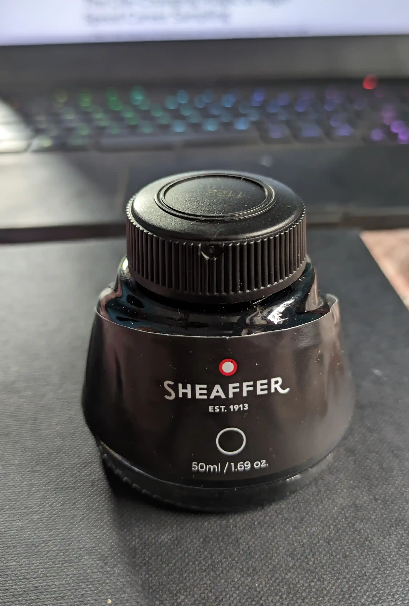
Going to seperate book notes from my blog website.
Redesigned blog to make it more minimalistic. Added option to change theme in status page.
Today I learnt how to read write cookies using javascript. Feeling like a pro XD.
Wayland is 10x better than xorg.
Installed Arch Linux. First time successfully on hardware. I forgot how fast Pacman is, or shall I say how slow dnf is.
The heading at the top looks ugly tho
Did a whole website redesign as I was bored of previous color scheme.
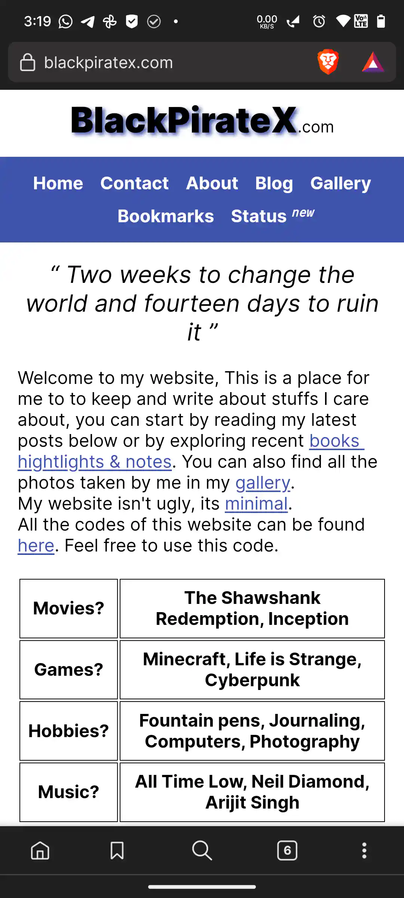
I’m getting bored of this green black color scheme of my website, want something new.
My first attempt at calligraphy.
Exams over. 5 days left for 2nd sem.
Imagine being the last of your species, saddest fucking thing ever
Shakira is to Spanish songs what Taylor swift is to English songs (to me)
I just understood why Picasso’s drawing is appreciated so much
Happy ending love story gets cringe pretty quick
Someone should train a chatGPT model on academic books and research papers
I’m thinking about removing book highlights from my blog. Those are literally quotes from some book, not my sentences, so they don’t belong here.
It’s so librating being able to give your soul and body to someone.
Tried to make a page for hobbies (it’s halfway done), I’m getting rusty.
Do you think Bing will take over search engine market share? Or Google is too big to fail? I think it’s little too early to tell.
Two cameras on my device is broken. I’m sure it’s some kind of hardware issue. My phone is becoming “minimal” everyday, love it.
Haven’t worte anything in my blog for so long. I guess it’s time to get my ass off and do it
Listening to white noise for concentration actually works. Better than listening to songs IMO
I feel awkward when someone asks me to be their best friend, like what am I supposed to do
It’s possible to play PS2 games on android.
It’s funny how smartphones are powerful enough to run console games yet we get games like candy crush and shitty endless running games.
I’m on a degoogled device. Lineage os with microG and tbh this time the experience is much better than I remember. Safety net is passing only half but all my apps are working. I’m staying on this ROM for so long <3. And battery backup is phenomenal.
I miss making websites.
I read 10 books last year (2022), two books less than my goal. 5 of them are from Murakami.

I’m not gonna remember word by word. I need to know the gist, and main key points, then I’ll arrange it with my own words.
College is starting. Finally :-P
I should take selfie after I shower;)
Happy New year everyone. My new year resolution would be to exercise more and take a selfie everyday.
Being an activist is basically life in hardcore mode.
I’m feeling low :-;
Merry Christmas everyone!
I can’t wait to go back home tomorrow
It’s been long since I posted here. I’m being infrequent, as I’m getting busy with life.
Using food color as Fountain pen ink. It’s as good as Fountain pen inks, if not better. I like the color of blue. It’s turquoise but little bit in the darker side.
I have read 3 chapters of The Bible, it’s interesting.
Verified two of my websites on mastodon. It’s so flawless.
Why is it so hard to download PDFs of books I need :-;
Oh and, exam went better than I expected. Got little help from a classmate.
I love writing journal on diary. It feels better. Better than writing digitally.
I can identify male and female pigeons
Going to give my first college exam today. Let’s see how good or bad it goes.
I guess I’ll be travelling a lot this year, love it.
Yesterday was so much fun and tiring.
I haven’t written any blog post for two months, I feel guilty
Thank you, <3. I love these.
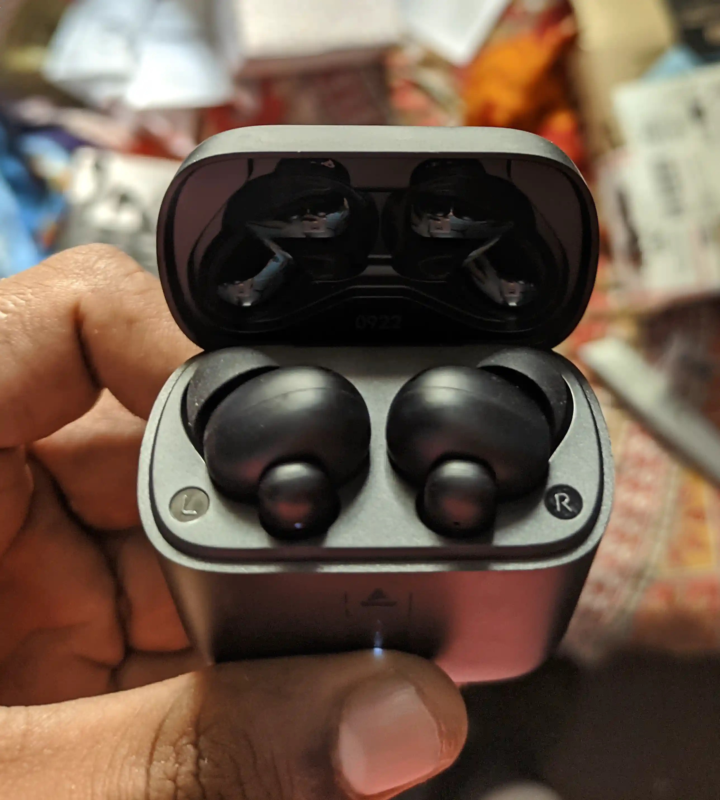
Quotes from Pulp Fiction:
“The Days Of Me Forgetting Are Over, And The Days Of Me Remembering Have Just Begun.”
“Just Because You Are A Character Doesn’t Mean You Have Character.”
“Pride Only Hurts, It Never Helps.”
“Trying To Forget Anything As Intriguing As This Would Be An Exercise In Futility.”
Twitter might go bankrupt. Please go, i want to see mastodon prosper.
I’m getting a birthday gift for the first time. I’m so excited.
I’m definitely going to get nightmares, watching [Rec] movie.
This is what Pulp Fiction is.

Finished watching Pulp Fiction.
I haven’t wrote any blog post for so long. I should write something.
I’m little worried about internals, it’s next Monday and I’m not even half prepared. Idk what would happen.
Sleeping at daytime »> sleeping at night
Got Platinum Preppy, Japanese nibs are so much better than anything I’ve used before, way less scratchy.

People can’t agree with anything.
Z-library has been seized by US govt. Sucks
If you want to get rich Make something that exploits children
Now I know why people care about shading when using fountain pen. It looks absolutely sexy on paper.
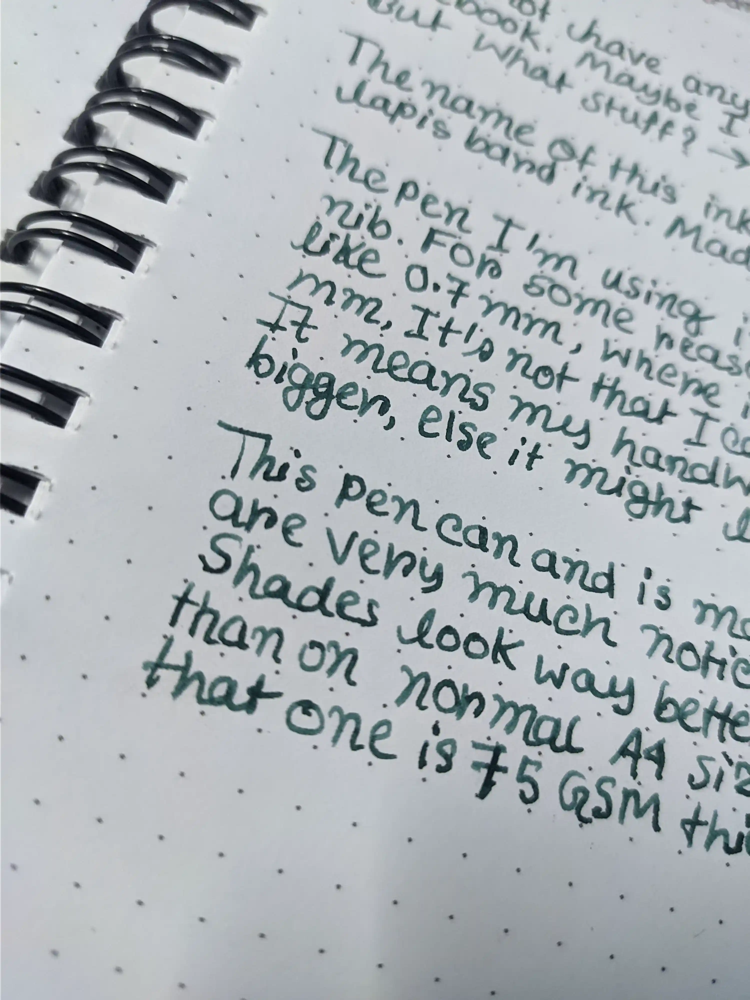
Even simple tasks can be extremely difficult to pull off at scale and with utmost accuracy.
Religion is cool, but when people make it their whole identity it’s a problem.
You can transfer NCERT books to kindle
This book is giving me goosebumps! A wild sheep chase.
Signal now supports stories. Damn, I want to move away from Whatsapp, but
Took 100 selfies but only like two. I’m a girl now.
I’m now finally able to smile in selfies.
Why is it so hard to smile while taking selfies :-;
Candlelight is best after sunlight for taking pictures.
I accidentally printed extra copies of a chapter :-; waste of ink and paper.
I shall sleep now. My eyes are closing.
I’m thinking about making my gallery page as so that I would be able to add images from my phone. Right now it’s possible but bit hacky way of doing things.
I want to try japanese songs. I don’t know if I’ll like them or nah
Going back home for holidays.
2nd day of college. It was decent. Practical happened. Didn’t make any new friends.
First day of college!! It was good. Nothing like I expected tho
My college will start from tomorrow and I’m little sick :-;
Obsidian 1.0 looks so friggin sexy. I love it.
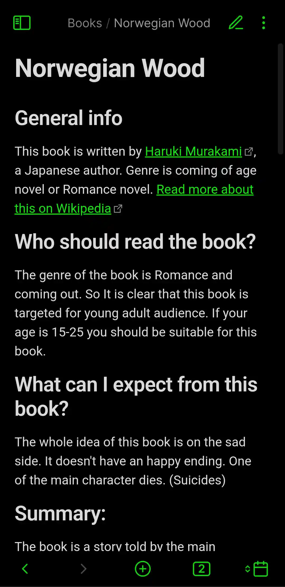
Writing with these inks feels so smooth!!

So far liking living out of home. Hehe
I’m now living alone (with roommates)
Spotify audiobooks are not free. Another feature of Spotify I won’t use. Bloat
I love this paragraph so much. The description damn!

Website changelog:
- Added font display (still need to fix more)
- added fallback font on body
- added defer to the js required for icons. Main content should now load faster, then those icons will show up.
Website changelog:
Status Website:
- No more big fat images, all images are small and in webp format.
- huge performance improvement
- Clicking on images will show original quality image.
- added show original button below images.
Website ToDo:
- Make texts visible while fonts are loading.
- explicit width and height to the images
“everyone loses 10 years to something, somewhere along the line”
Source: This HN comment
Explaination:
Read through the thread. Look how many stories there are of people losing years and years to something that they now regret. The realization is that this is the norm, not the exception. We’re all just fragile and fallible and trying to make our way through life as best we can, and we all end up messing up big somewhere along the way.
It’s easy to look back on 10 wasted years and think you failed, you blew your one chance at life. But if you come to realize that looking back on 10 wasted years is actually a common human struggle, it can help you reframe your regret as just another one of the trials of being a limited, mortal human and not take it so personally as your own failing.
“Whatever your goal is, try to stop having 0% days.
You don’t need to have 100% days, Just avoid having 0% days.”
Source: Reply to this HN comment
When giving a sales pitch (or in general) use the word affordable instead of cheap.
Note to self: Don’t drink coffee at night
Guys, I can’t wait to make a Chinese version of my site
I seriously need to find a way to optimize images. 3-4 megabytes of images are totally unacceptable on web. 3g network or even 4g would have a hard time loading it. If you think you can help me with that I’ll appreciate it. Contact here.
This looks like a painting

The sky looks so beautiful!
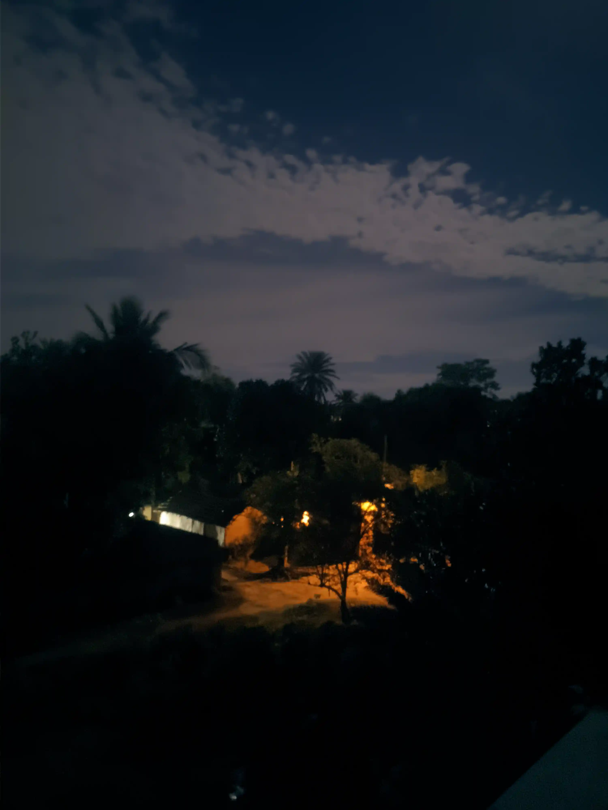
Daft punk musics are good for listening when I’m studying.
I’m loving fountain pen 😍
This sums up my obsession with pens!

Of all the pens I have used these are the best!! (So far)

.ooo is cheapest because one Indian company owns it. That Indian company also owns CC avenue
Finding and visiting random people’s personal website is so fun. It’s one my favorite way to spend time :)
Trying out Fish shell, already I’m impressed. It’s better than Bash and Zsh.
Just learnt LaTex, holy shit it’s easier and faster. Also love the default design.
Website changelog:
- Blog and Status website now has total post counter.
New post on my blog: https://blog.blackpiratex.com/streaming-on-spotify-vs-using-mp3s/
Daft punk is so good. Im getting into electronic music.
Appimages are better than flatpaks. Vscodium from flathub requires 500megs of dependencies, whereas vscodium appimage is only 100MB.
People nowadays are less likely to go to war than before
I did some UI/UX tweaks on this status website.
- website now loads faster. It will now load 20 posts only, instead of 50 like previously.
- fixed position of “Newer posts” and “older posts” button at the end of the page.
- added new “go to top” button.
- new “sort by tags” option at the end of the page.
That’s all.
I’m thinking about making a page where I’ll list down all the software I use. It would be like a live blog post. I’ll update as necessary.
Found a cool website that lets you add comments, it’s better than Github comment thingy. Because it doesn’t require login. I’m not sure if I should do it. I’m afraid of spams.
Here is their homepage.
Gnome is actually pretty good desktop environment. I love it.
SSDs are cheaper than SD cards, wow
Linux is going to take over windows in future. Maybe in next 2-3 decades. It’s already happening slowly.
Switched back to degoogled phone. For some reason messages app keep using data on previous phone, Like why?? Maps is working as far as I can see. Imma use it to navigate and let’s see how much of a problem I’ll face.
Got audiobook feature on Spotify, and it’s free??
I’m distro hopping, to fedora. Archcraft is giving me some pains.
This website is now hosted on Vercel. I can’t host it on netlify because my repo is private. :-;

It would offend a lot of people
Finished Kafka On The Shore. I did it in 7 days. I love the story so much.
Why does messages app using data?

I wanna use a compass to navigate instead of maps
Instead of learning conventional way learning with books in a Library is better.
You don’t have a deadline, you also never finish studying. Nobody’s going to judge you if you learn slow, learn fast or don’t learn at all.
“Youth is wasted on the young”
Even normies are using “normie” word. We need to invent new word.
I love the amount of details in Murakami’s books, so amazing
Using Bluetooth to transfer files, feeling like caveman.
Translating my website into Bengali is way too much hassle, and feels a bit cringe. I am not sure if I should translate or not.
If BBT was made this time, all characters would have been weeb
Translating my website into bengali. So far did two pages. Check out one here:
“Poor countries make clothes. Rich countries make machines that make clothes.”
TIL you can charge AA batteries.
Why is it so hard to use git on mobile :-; I want to sync my obsidian notes to GitHub. Doing it on termux is gay.
Another test
This is a test ignore
I’m wayyy more comfortable with girls than expected
I went to sleep starting a playlist and woke up when it started playing blackpink, and turned it off
Listening to podcasts are better than watching YouTube videos.
I studied only 2 hours today but it feels like a lot.
NEET All India Rank is 6lakh 32k something. SC rank is 72k.💀 This is the hardest exam I gave so far.
Google app used almost 5gigs of data without telling me anything :-; I’m pissed.
Indians think talking in Hindi makes them look cool. So many Bengalis also talk in Hindi when both party knows Bengali, pisses me off.
Waiting for NEET results!
I got 76wpm damn!!
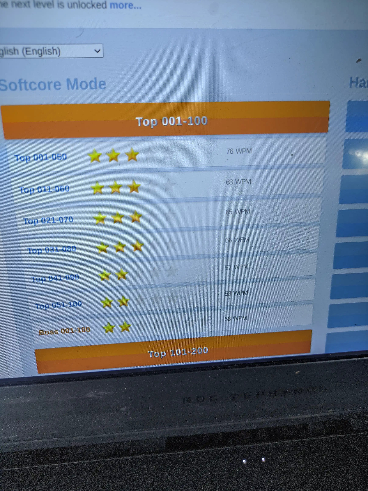
Very unproductive day today :(
No, I didn’t follow the daily planning at all :-;
Made daily planner on paper today: let’s see how much I follow this planner.

“Whatever you say about India, the opposite is also true.”
This website is more than one month old!! It feels like just YESTERDAY I made this!
I’m getting addicted to studying, I hope it’s permanent.
“Why settle for less than the best solution?”
Source: Pinned Comment
I’m so happy rn. Will tell the reason later:) hopefully everything goes as expected.
Watching YouTube at 144p cuz no wifi :(
TIL Monkeys use sex toys.
I need to find a way to compress images automatically on this website. 1mb of pictures are unacceptable.
This is a test:
These noodles are super tasty 😋
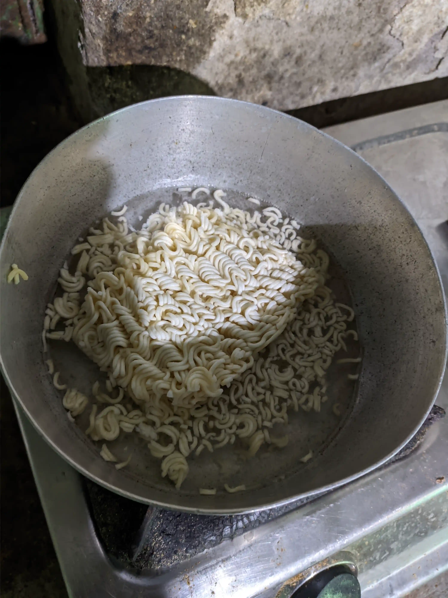
Sticky Notes/post it notes are so cute:)))
New discord update made it so smooth on Android
My hand is hurting so bad! Argh!
Changed theme of my website again. Here is how it looks.
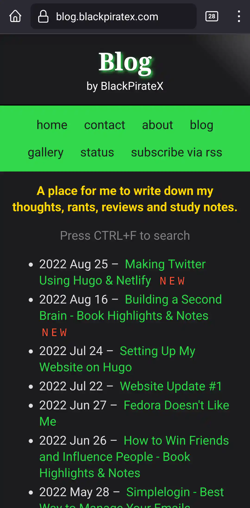
This is the screenshot of first ever hosted and made in India website: mafatlal.co.in
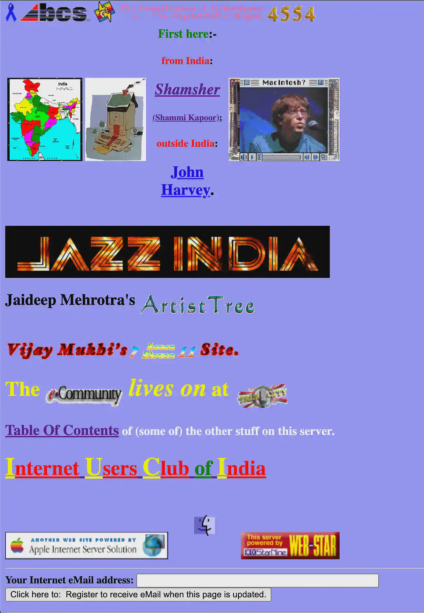
Where are you supposed to look at while taking a selfie? Make eye contact with yourself or to the camera?
There’s a chance that in future there would be more women than men. On average, whole world.
A list of things people blamed on bicycle: https://mobile.twitter.com/paulisci/status/1561848479470694403
I’m tired, don’t know why :(
Google Maps is working with microG Yeay
Moved my sim inside degoogled phone. Everything should work. Other than google maps.
Studying in english »» studying in bengali
If your girlfriend doesn’t take a no for an answer say " you can’t take a no, how tf are you gonna take my dick"
I feel shitty rn. Saved old biology notes to Evernote
I’m sleepy and tired. Internet is not working well
I’m so bad at choosing colors. Anyway, my website uses hugo now.
All time low is the best band ever!!!
Website V3.0 is live now!! Consistent design and more minimal. Check: https://blackpiratex.com
If I am using Spotify I listen to more songs than usual.
Redesigning all my website so there’s consistency. But I am hungry for now:)
“Butterflies use nanotechnology to lie about their colors”
I cut my finger 3 times today.
“Your scientists were so preoccupied with whether or not they could, they didn’t stop to think if they should.”
I’m sleepy,can’t even think properly for writing. Good night people.
I am listening to Amoeba by Clairo for more than one hour. This song is 🔥🔥
I feel shitty rn. Need to clear my head. So many descisions to make.
Best feature of Android 13 is opt in notification. I love this <3
Amplenote is almost perfect, it’s just their pricing and low storage space is bugging me
It’s frigging annoying if someone keeps insisting on giving them my pics, like bro take a hint
“One of the worst things somebody can do to you is pay you just enough money to lead a good life.”
Source: https://youtu.be/QN2vXIXWNvc
It’s about to be early morning and still I am not at all sleepy.
Just tested Amplenote, the free plan is very good. But I don’t like the ui. It has way too many features. And 5MB attachment limit for free plan is okay but won’t cut it for me. Maybe I’ll try it again someday.
You know it’s August when all your friends profile pictures are suddenly Indian flag. Happy Independence day everyone.
Is it just a coincidence that if you add ’e’ at the end of the “monk” it becomes ‘monke’
I’ll make my own religion where God is gay. It would be funny as hell.
Self help books are pretty boring, same repeatative things rephrased with different words. In Building a second brain the whole content can be in a simple few minutes long blog post.
If life is consciousness, then we need some scientific way to determine when babies get consciousness. Then it would be easier to determine abortion related laws.
I just realised why people write their emails like jhon [at] jhondoe [dot] com . TO AVOID SPAM EMAILS!! How did I never thought of that!
Right now this website probably has zero viewers, I am thinking about adding this to some webrings so that It gets some traffic.
Right now I use dropbox to sync my obsidian notes. It is not perfect but it is okay and works very well. But I am thinking if switiching to github for storage of my all notes would be a good idea. I think yes, beacuse git is very good at small text files or images. Maybe I would move to it someday. This microblog already lives on github so why not all my personal notes?
Of all the note taking apps I have used, obsidian has THE best writing experience, specially for long form or semi-long form writing. No other apps come any close.
I think this year is going to be bad. Funny how I am realising this in middle of the year.
Completed Shadow of the Tomb Raider today. Very good game. 8/10 . Next is either Red Dead Redemption or Life is Strange
“Freedom is the freedom to say that two plus two make four. If that is granted, all else follows.”
I would try speed reading this book Building a second brain, the english is easy for me to comprehend.
“Everything not saved will be lost”
I have few old blog posts from 2018, Shall I publish them?
I wish OCR was available for Bengali, specially for handwritten texts. I scanned my 2017 Journal and now want to search inside of it. Evernote cannot recognise bengali texts, bummer!
Finished 9 hours of conspiracy theory iceberg. Probably the longest video that I have watched from start to end.
I think it is easier to design something beautiful in white mode than dark mode, Idk why..
I love how evernote can recognise handwritten texts and search inside them, that is so powerful. Here is an example:
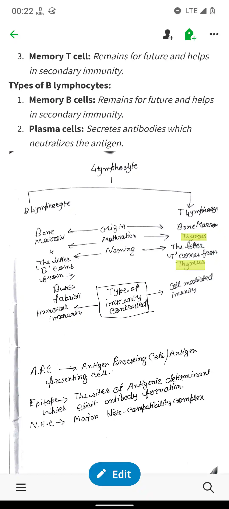
Evernote is very good at search (when you’ve paid), I am thinking about using it in long term. Also the ability to send emails to evernote is so powerful. It can act like a backup for all those important emails. Despite it being heavy on resources and slow I still like it.
Didnt go to the exam, will give it next year:) Hopefully.
Thinking about switching to evernote, notesnook is okay, but writing experience isn’t that great, plus lots of bugs :(
Its weird to think that life would still be possible even after sun has disappeared.
Imagine getting your admit card the day of the exam or the night before exam, like what the actual fuck
Controlling airplanes in GTA V is so hard.

Youtube thinks I play roblox and recommending me robux scam videos 🙃
I just realised, humans are the first species to try to leave earth. And they are quite successful so far. Although they cannot adapt to the outer world yet (biologically speaking). They can adapt with help of “technology”.
Kind of finished making the website. Let’s hope that my client likes this website. Then it would be my first website made for commercial purposes.
Made another website. Didn’t eat anything. Should eat now.
In two years my typing speed went from 20-30WPM to 50-60WPM, almost double. I wonder how long it would take to double again. 5 years?
Switching to 1password. Bitwarden is lagging for me so fucking much. I have over 1k items and it lags like shit. 1password is faster and I am liking the UI.
I should study. I need to make anki flash cards for a new chapter.
Applying for colleges is so tedious. Only few days left to do:(
Added time now:) It is easier than I thought. Also website has new fontawesome icons!!
There’s two types of dumb people, those who believe earth is flat, and those who try to disprove them.
Showing time on Hugo is so fucking hard. I am fraustated now. I’ll try again later.
It is final now. I am going to use this as twitter. I am so proud.
title: “4”
date: 2022-07-26T18:03:33+05:30
tags: [test]
I am writing this using smarphones!!! Will it work?